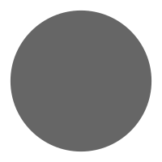

 百变小强-编程教育启蒙玩具
百变小强是一款面向人工智能启蒙教育的编程机器人，作为一款体积小的陪伴型玩具，百变小强用于颜色识别、语音控制、蓝牙遥控等丰富玩法， 兼容乐高积木件，可进行外形改造，并通过编程定义属于孩子自己的玩乐方式。百变小强集趣味性、拓展性、学习性与一体，可以激发孩子们的想想力、创造力 和动手能力。适合8岁以上的儿童。
角色扮演
小强底座驱动开发
采用ARM® Cortex®-M0内核32位单片机的mini58。使用Keil开发。传感器包括两路电机、一个无源蜂鸣器、两路光电，光电包含3个功能：1.当RGB灯使用。2.读取灰度值。3.颜色识别。而mini58只做驱动，与另一核心通过Uart协议来间接控制。开发前根据需求画了脑图。
同时定义串口通讯协议。采用同步通讯，每条指令都带返回。Arduino发送指令给小车，返回状态结果指令，这样可以知道每条控制指令是否执行成功。
控制小车指令
控制小车包括电机驱动指令、蜂鸣器驱动指令、光电模式设置指令。
协议格式：数据头(2byte)+命令(1byte)+数据长度(1byte)+数据(nbyte)+校验值(1byte)。返回数据格式：数据头(2byte)+命令(1byte)+结果(1byte)
获取小车数据指令获取光电的灰度值、颜色值、固件版本号。
协议格式：数据头(2byte)+命令(1byte) 返回数据格式：数据头(2byte)+命令(1byte)+数据长度(1byte)+数据(nbyte)+校验值(1byte)
Arduino应用层API开发
根据定义的串口协议，开发Arduino端控制程序。封装了驱动电机、蜂鸣器、设置彩灯、读取灰度值、颜色值函数，用户直接调用API即可驱动。
App通讯固件开发
App主要包含遥控玩法（固定功能）和图形化编程玩法（用户自定义）。为了两个玩法兼容，采用Firmata协议，新增百变小强传感器控制指令。这样手机App中遥控与编程玩法就可以用一套协议，控制逻辑由手机来完成， 优点在于更新玩法只需要更新手机软件，不再需要更新百变小强固件。
mDesigner图形化编程固件开发
mDesigner图形化编程需要支持online和offline程序，online模式与手机App编程模式一样采用Firmata协议。offline程序就是Arduino应用层API。
展示程序开发
基于Arduino应用层API开发出好玩、有趣的应用。如前作品里的小沙盘、物体分拣机等等。
百变小刚-自识别传感器
百变小钢由底板（包括主控CPU、蓝牙模块、低功耗控制模块）作为控制核心，底板上连接传感器和掌控板。底板可以通过蓝牙和串口连通上位机，从而实现与底板传感器进行交互。本底板目前可以连接五款传感器：电机传感器、光电传感器、超声波传感器、舵机传感器、手势传感器、彩灯传感器、红外传感器等。
掌控板又叫指间板，分为AVR点阵或ESP32两种，通过核心板编写用户程序来实现对传感器的控制。
角色扮演
自识别传感器固件开发
采用mini58 32位处理器，通过两路IIC进行通信，一路用于主机的自识别，一路用于其他核心的离线控制。包含彩灯传感器、光电传感器、超声波传感器、手势传感器、红外传感器、舵机传感器。
1.彩灯传感器：驱动ws2812协议的彩灯，一条总线就可以驱动，一个灯携带24bit数据（3个灯，一个灯8bit），1bit的高低码由信号高低电平时间决定。
2.光电传感器：支持3种模式：1.RGB彩灯；2.灰度识别；3.颜色识别。
3.超声波传感器：产生40KHZ频率超声波，一次发送8个脉冲，通过定时器捕获接收到的波形来计算距离。测试超声波死区在3cm，误差5mm。
4.手势传感器：因已经占有两路IIC，所以手势传感器需要一路软IIC才能驱动。能够获取到手势和距离两功能。
5.红外传感器：集成发送和接收，发送38Khz的NEC制式、Sony制式信号。只接收NEC制式信号。
6.舵机传感器：产生一个50HZPWM波形，周期20ms。0.5ms-2.5ms脉冲宽度对应0-180度。
针对每个传感器定义IIC数据表，用于访问及控制。
Arduino应用层API开发
根据定义的IIC数据表，开发Arduino端控制程序，用户直接调用API即可驱动。
mDesigner图形化编程固件开发
提供IIC数据表，沟通对接IIC数据操作方法，用于图形化软件控制。同时提供Arduino的API示例，用于离线代码编写。
MicroPython应用层API开发
为ESP32指间板开发MicroPython的驱动API（py文件），用户直接调用API即可驱动。